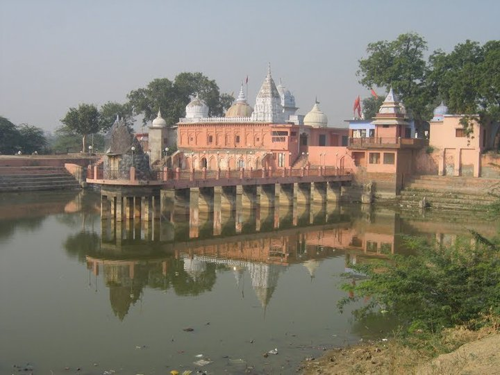
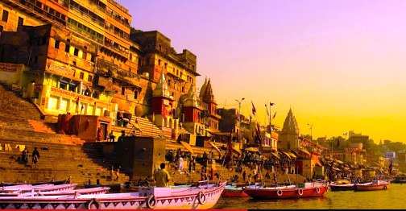
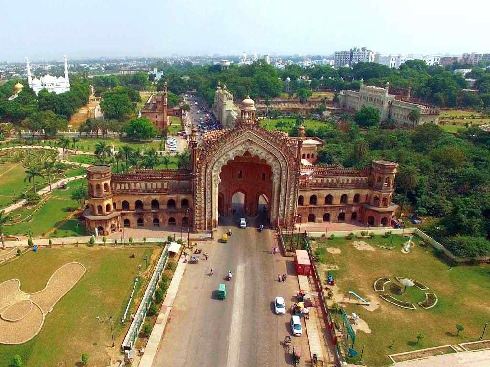

My Hometown: Uttar Pradesh
-



There is always a place one likes to call home. A place that isn’t perfect but brings back a bundle of memories, surrounds you with familiar crowds, those same buildings with a few more additions on every visit, the same public problems and an acquainted way of dealing with the locals. All these make us give it more importance than the rest. So, here, I will be describing my hometown.
My hometown is Hamirpur, Uttar Pradesh. It is a small town where I was born and grew up in my childhood. I haven’t spent much time in my hometown as my father got the opportunity to join the defence service. But, I have lovely memories of my childhood. Hamirpur is situated on the bank of the river Yamuna and it meets the water requirement of the area. Its water is also used for irrigation purposes which makes the soil more fertile and rich for agricultural activities. The river sand is also used for construction. Lots of trucks full of sand transport the sand to different places. In my childhood days, we used to swim across the river and play on its shore during the summer season.
I think Hamirpur is a great place for me for many reasons. First of all, my hometown has all types of seasons. One can enjoy hot summers, chilly winters and rainy monsoons. Since the weather is so great here, one can enjoy the taste of different kinds of food, and vegetables in different seasons. Each season demands a different lifestyle. For example, during summer, people prefer to wear cotton and light colour clothes to save themselves from hot temperatures. Whereas during winter, people wear woollen clothes and jackets of different colours. Hamirpur is well known for farming. We grow different types of crops like wheat, rice, millet etc.
I have a temple in my hometown. I used to go to the temple every Thursday with my family. It has a serene atmosphere, green fields and a pollution-free environment. If I go there, I feel like it is heaven for me, and I definitely say that it is just not enough to see the beauty of my hometown in the rainy season; you have to experience it yourself.